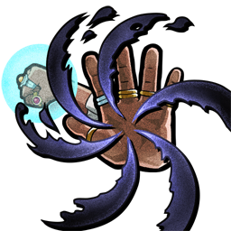
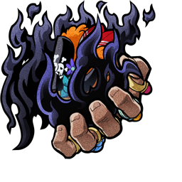
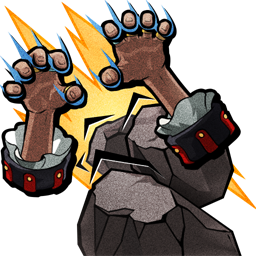
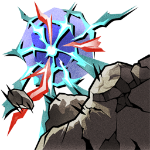

О персонаже
Навыки

Skill 1
Darkness's Pull
↻ Changes into ↓

Changed Skill 1
"Black Hole" "Liberation"

Skill 2
Tremor-Tremor Powers
↻ Changes into ↓

Changed Skill 2
Tremor Crush
Трейты
Character Traits
English
After holding down the normal attack button during the 1st hit of a normal attack combo: the 2nd hit changes into a multiple hit counter attack, max 3 consecutive hits, that Knockback enemies. Become temporarily invincible.
When counter succeeds: increase DEF by 30% for 20 seconds. Cannot stack. Recover 30% of HP, and change Element to Light or Dark, whichever is different from your current Element.
Power Gauge can be used. Increases up to 5, but resets once KO'd. Skill 1 transforms into "Black Hole" "Liberation" and Skill 2 transforms into Tremor Crush when Power Gauge is at max.
When using a skill transformed by the Power Gauge: uses 5 units of the Power Gauge, and reduce the cooldown time of Skill 1 by 30%.
When attacking an enemy with a skill: boosts Power Gauge by 1, and reduce the cooldown time of Skill 2 by 10%.
Nullify Sleep, and reduces the effect time of status effects inflicted by enemies by 80%.
Русский
После удержания кнопки Normal Attack (Обычной атаки) во время 1-го удара комбо: 2-й удар превращается в многоударную контратаку, максимум 3 попадания, которая накладывает Knockback (Отбрасывание). Тич временно становится неуязвимым.
Когда контратака успешна: DEF увеличивается на 30% на 20 секунд. Эффект не складывается. Восстанавливает 30% HP и меняет Element (Стихию) на Light или Dark.
Может использовать Power Gauge (Шкалу силы). Шкала увеличивается до 5, но сбрасывается после KO. Когда Power Gauge заполнена, Skill 1 превращается в "Black Hole" "Liberation", а Skill 2 превращается в Tremor Crush.
При использовании навыка, усиленного через Power Gauge: расходует 5 единиц шкалы и сокращает Cooldown (Перезарядку) Skill 1 на 30%.
При атаке врага навыком: увеличивает Power Gauge на 1 и сокращает Cooldown Skill 2 на 10%.
Nullify Sleep (Иммунитет к Sleep) и сокращает длительность Status Effects (Статусных эффектов), наложенных врагами, на 80%.
Trait 1
English
When attacking an enemy, 100% chance to increase ATK by 5%. Increases up to 75%, but resets once KO'd. Also reduce the cooldown time of Skill 1 by 3%.
When your HP is 50% or more: Resist Stagger effect, and reduce damage received by 30%.
When attacked by a character type Power users enemy: enemy's ATK reduced by 50% for 10 seconds. Cannot stack.
Русский
При атаке врага: с шансом 100% ATK увеличивается на 5%. Максимум до 75%, но эффект сбрасывается после KO. Также сокращает Cooldown Skill 1 на 3%.
Когда HP составляет 50% или больше: активируется Resist Stagger (Сопротивление Stagger), а Damage Received (Получаемый урон) уменьшается на 30%.
При атаке от врага типа Power users: ATK врага снижается на 50% на 10 секунд. Эффект не складывается.
Trait 2
English
When attacking an enemy with Skill 1: nullify the trait 1 HP will be left even if KO'd by enemy, and increase the cooldown time of the enemy's dodging by 50% and increase the cooldown time of the enemy's guard by 50%.
When attacking an enemy with Skill 2: nullify the trait Recover HP when enough damage is taken to KO character, and recover HP by 30%.
When attacked by an enemy with the Element you are strong against: reduce damage received by 30%, and remove enemy's ATK increase.
When your HP is 50% or more: increase damage to enemies with the Element you are strong against by 50%, and recover 50% of percentage damage received from an enemy.
When attacked by a character type Navy enemy: remove enemy's ATK increase, and recover HP by 5%.
Русский
При атаке врага Skill 1: игнорирует трейт 1 HP will be left even if KO'd by enemy (Остаётся 1 HP при смертельном уроне), а также увеличивает Cooldown уклонения врага на 50% и Cooldown защиты врага на 50%.
При атаке врага Skill 2: игнорирует трейт Recover HP when enough damage is taken to KO character и восстанавливает 30% HP.
При атаке от врага с Element, против которой у Тича преимущество: Damage Received уменьшается на 30%, а усиление ATK врага снимается.
Когда HP составляет 50% или больше: урон по врагам со стихией, против которой у Тича преимущество, увеличивается на 50%, а также восстанавливает 50% от процентного урона, полученного от врага.
При атаке от врага типа Navy: снимает усиление ATK врага и восстанавливает 5% HP.
Boost Trait
English
When attacked by an enemy who has obtained a Defensive Shield: DEF boosted by 50% for 3 seconds. Cannot stack. Including after the defensive shield is destroyed.
Русский
При атаке от врага, который получил Defensive Shield (Защитный щит): DEF увеличивается на 50% на 3 секунды. Эффект не складывается. Срабатывает даже после разрушения щита.
Медали
🏅 Рекомендуемый сет

Elephant Gatling

King Kong Gun

Fire-Fist Pistol Red Hawk
Название сета: Луффи сет
Универсальный атакующий сет с хорошими бонусами урона и перезарядки навыков.